|
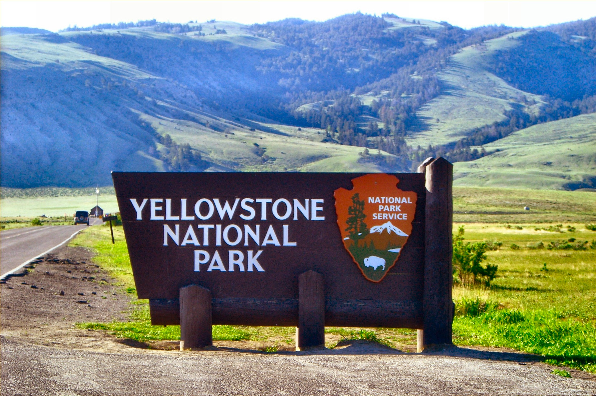 Йєллоустонський заповідник, який розкинувся на території США - справжня країна чудес, яку щорічно відвідують сотні тисяч туристів, щоб відпочити душею серед незайманої природи. Це міжнародний біосферний заповідник, об'єкт Світової спадщини ЮНЕСКО, перший в світі національний парк. Йєллоустон - заповідний край лісів і каньйонів, гарячих джерел і крижаних водоспадів, обсидіанових скель і різнокольорових терас. Розкинувся цей чудовий край на 898,3 тис. га. Парк має приблизно прямокутну форму - з півночі на південь його протяжність становить 102 км, зі сходу на захід - 87 км. Тут є все: і снігові гори, вершини яких досягають більше трьох тисяч метрів і губляться в хмарах, і долина, де б'ють сотні гейзерів і близько чотирьох тисяч ключів... 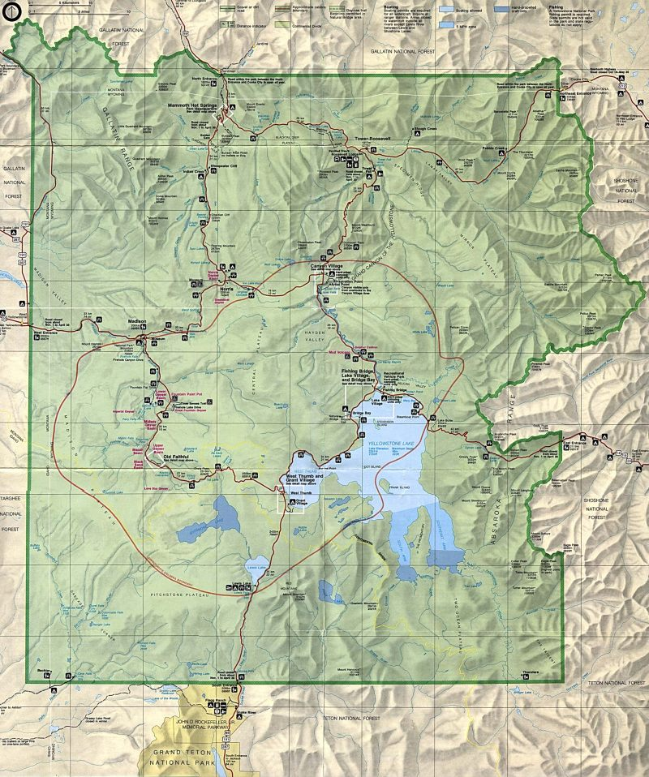 Першим європейцем, який досліджував Йеллоустоун, був Джон Колтер. Будучи одним із учасників експедиції Льюїса і Кларка, що досліджувала північний захід США, Джон Колтер в 1807 році описав західні регіони Вайомінгу, в тому числі і Йеллоустоун. Колтер барвисто змалював побачені ним гейзери і гарячі джерела, але йому не повірили, вважаючи його розповіді небилицями і назвавши описані ним місця “пеклом Колтер”. Пізніше, у 1850 році в Йеллойстоуне побував мисливець і дослідник Джим Бріджер. Також, як і Колтер, Бріджера з його розповідями про фонтани гарячої води, що б’ють із землі, і пари, визнали вигадником. Після закінчення громадянської війни на початку сімдесятих років XIX ст. уряд США фінансував дослідження північно-західних регіонів країни. 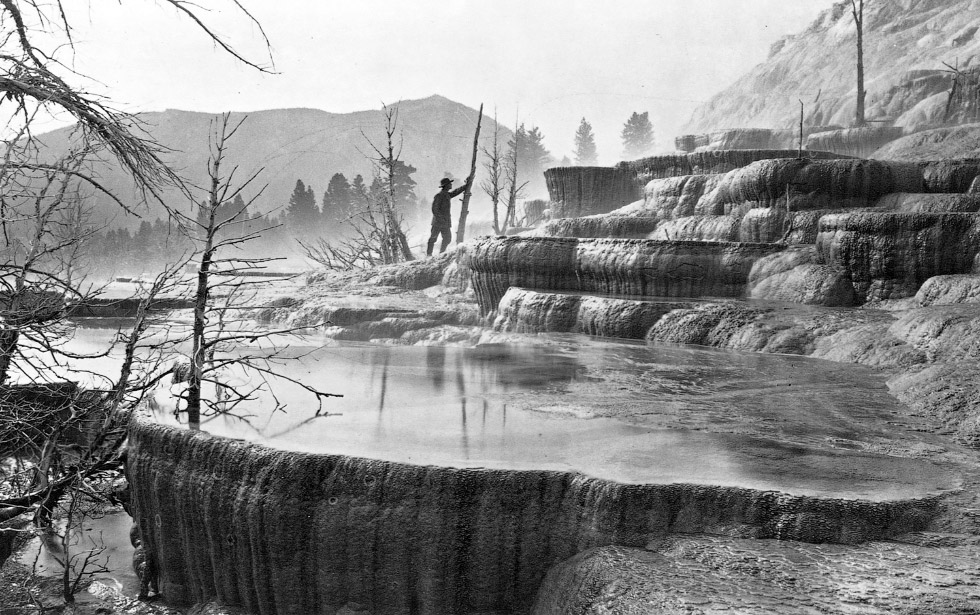У 1871 році район Йеллоустоун вивчила експедиція під керівництвом американського геолога і натураліста Фердинанда Хейдена. Підготовлений Хейденом доповідь про Йєллоустон, проілюстрований фотографіями Вільяма Джексона і картинами Томас Морана, переконав Конгрес США в 1872 році прийняти закон про створення Йеллоустонського національного парку, першого національного парку США та взагалі у світі. 
По всій території парку можна побачити потоки застиглої лави, а в долині Обсидіанової річки височіє величезний скеля, що цілком складається з вулканічного скла. Сліди недавньої вулканічної діяльності помітні не тільки у вигляді лавових потоків. То тут, то там в долині річки Єллоустон, що прорізають плато, зустрічаються гарячі джерела, гейзери і калюжки, а то й цілі "котли" гарячого булькаючого бруду. 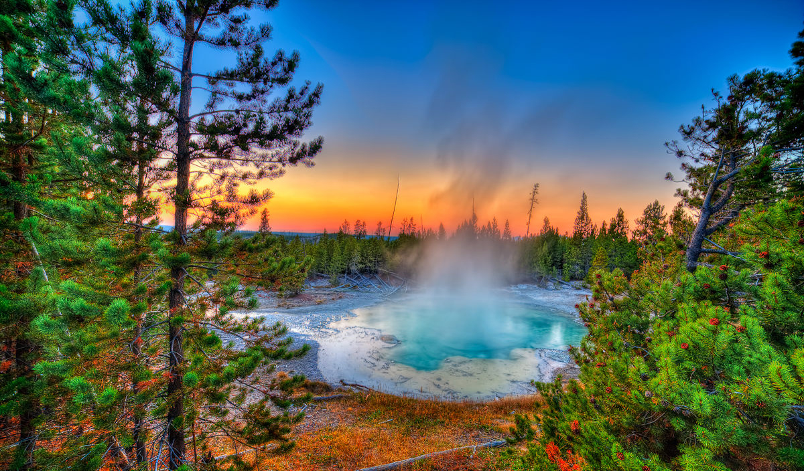Найбільших масштабів гідротермальні явища досягають на берегах Вогняної ріки. Тут на двох ділянках: Верхньому і Нижньому гейзерних басейнах - розмістилося більше 40 гейзерів і тисячі гарячих джерел. Струмені деяких з Єллоустонських гейзерів б'ють більш ніж на 100 м, а найвищий фонтан перевищує по висоті 115 м. Самий же потужний гейзер викидає в момент виверження на десятки метрів вгору майже 4000 т води! 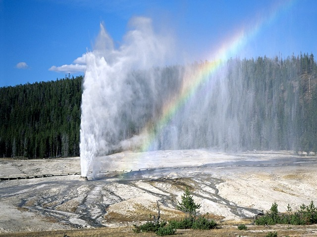Вражає періодичність "роботи" цих природних фонтанів. Одні з них вивергаються з інтервалом в 2-3 роки, інші салютують з проміжком у кілька діб, а безліч дрібних, двох-або триметрових, б'ють кожні 3 - 4 хвилини. 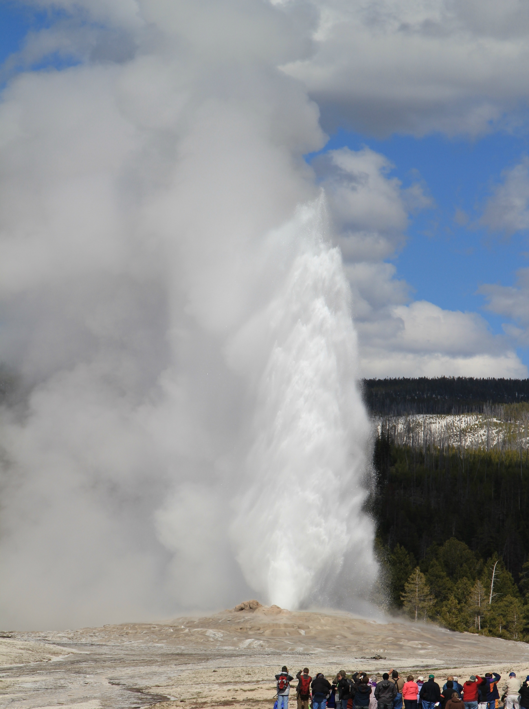Найбільш популярний у туристів гейзер Старий служака. Він вивергається з незмінною точністю кожні 65 хвилин.Струмінь киплячої води діаметром півметра злітає при цьому на 50 м. Виверження триває 4-5 хвилин, а потім настає перерва. Але рівно через годину і п'ять хвилин відбувається новий викид, що змінюється через 5 хвилин черговим затишшям. Гейзер Гігант називають "водяним вулканом". З інтервалом у чотири дні він викидає на висоту 90 м могутній стовп окропу. У Єллоустонському парку багато гірських озер. Колір води в них, залежно від погоди, змінюється від сіро-сталевого до темно-синього або зеленуватого. 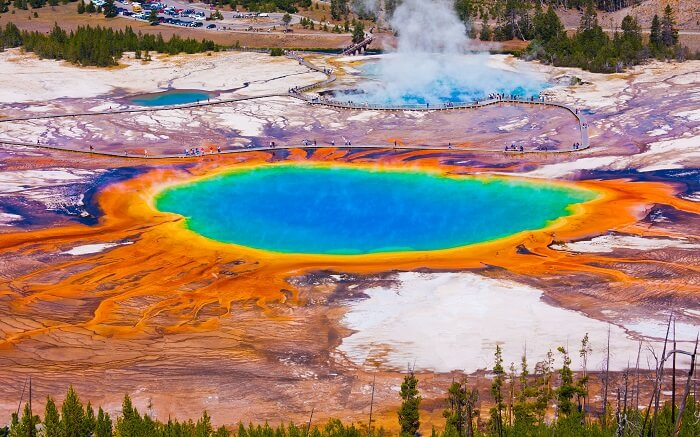Найбільше - Єллоустонске озеро площею 370 кв. км і завглибшки до 120 м. У водах його відбиваються навколишні хребти з їх скелями, сніжниками і лісистими схилами, а біля підніжжя хребтів, біля самої води, б'ють гарячі джерела. 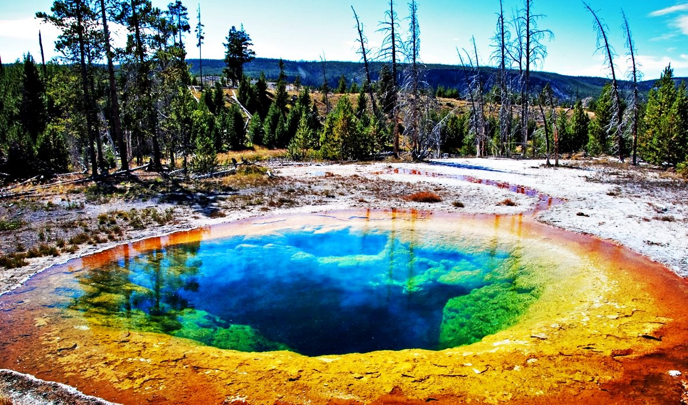Навколо джерел і гейзерів на поверхні землі відкладається шар жовтувато-білою пухкою породи - гейзеріта. Вода багатьох невеликих озер через приплив гарячих підземних вод має підвищену (іноді до 50-60 ° С) температуру. 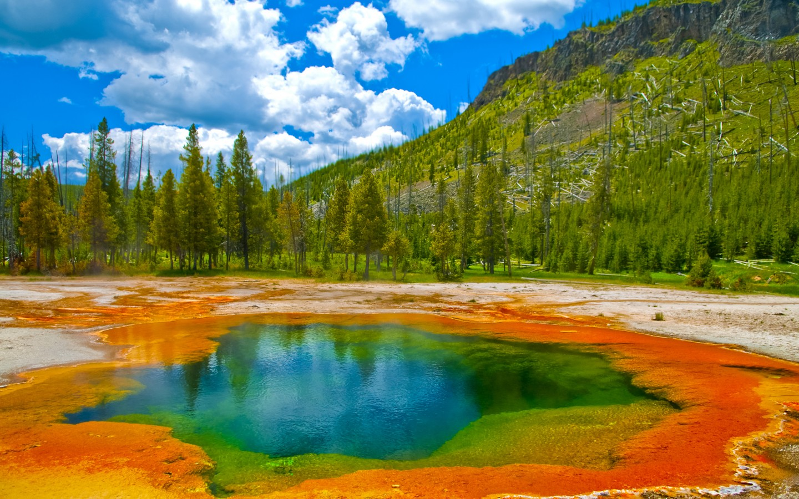Але озера ці не мертві. У них живуть теплолюбні водорості, забарвлення яких - пурпурна, жовта, оранжева, зелена або блакитна - додає воді озер найрізноманітніші відтінки. А деякі мікроорганізми примудряються вижити навіть при температурі води 90 ° С!
ЄкологіяУ 1926 році в рамках заходів щодо захисту поголів'я вапіті в парку Йєллоустон була повністю знищена популяція вовків, після чого койот став найбільшим хижаком, який полює на гризунів. | |
| 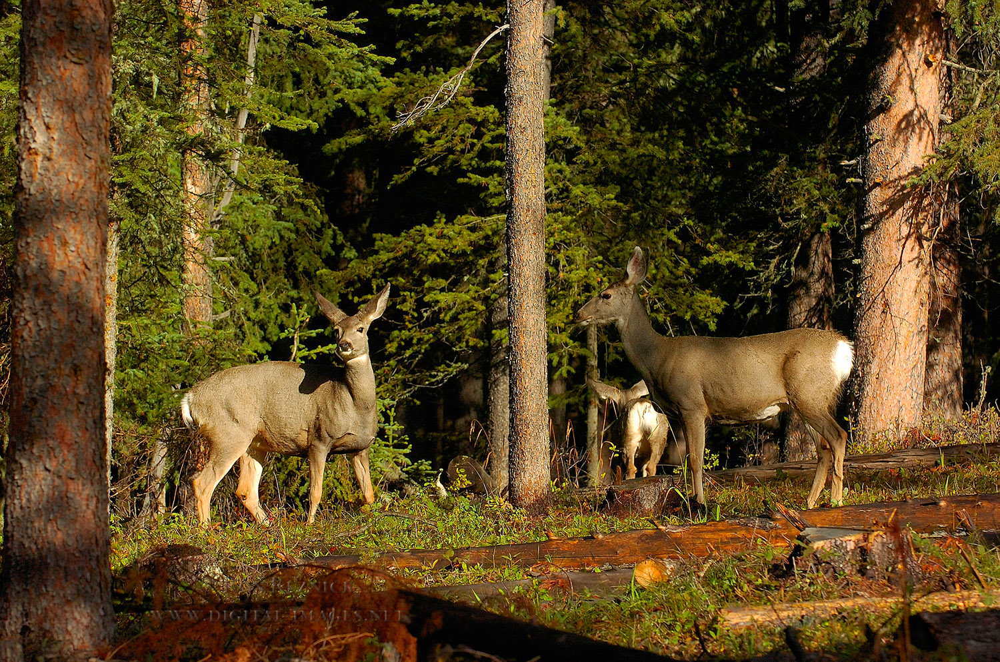 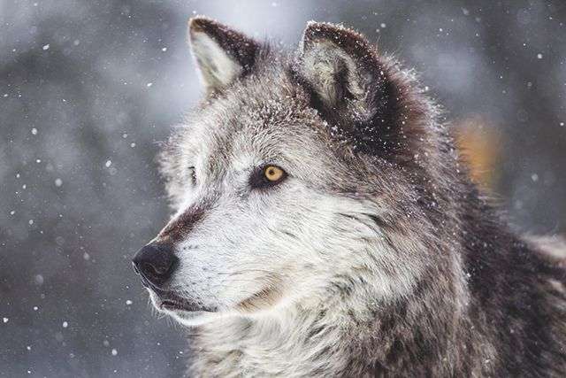 | |
|
Але койоти не полюють на великих копитних, і в результаті випадки хвороб серед останніх істотно почастішали. Якщо ж брати до уваги, що поголів'я бізона в парку відносно велике, близько чотирьох тисяч, і являється одим з найбільших в США, це викликає заклопотаність фермерів, які побоюються, що бізони передадуть інфекції домашнім коровам. 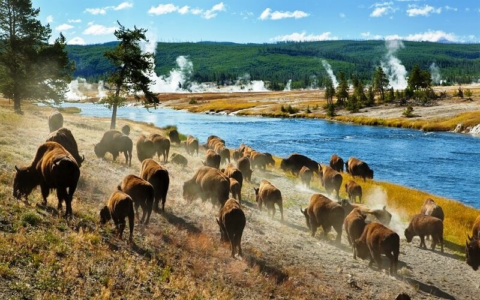Практика знищення вовків була припинена в парку тільки в 1935 році. Потім довелося вживати заходів щодо захисту вовків. У 1973 році Конгрес США прийняв Акт про види під загрозою знищення, що згадує, в тому числі, вовків. У 1990-і роки в парку випустили 66 макензійських рівнинних вовків, в 2005 році їх чисельність в парку становила 118 голів.
Біологічне розманіття паркуУ парку водяться майже 60 видів ссавців, в тому числі рідкісні: вовк, рись і грізлі. 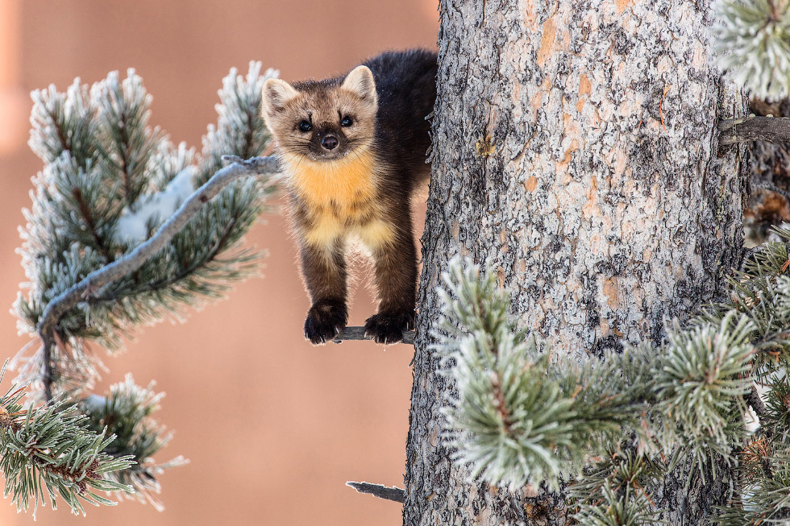 Серед великих ссавців зустрічаються також бізон, чорний ведмідь (барибал), олень вапіті, лось, олень чорнохвостий, сніжна коза, вилорог, толсторог і пума. | |
| 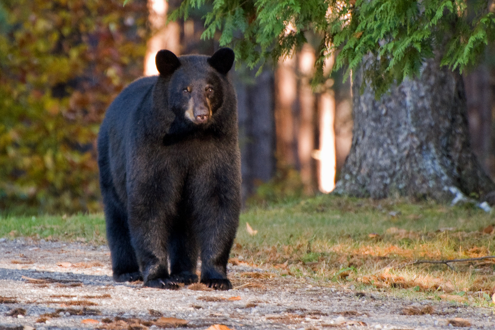 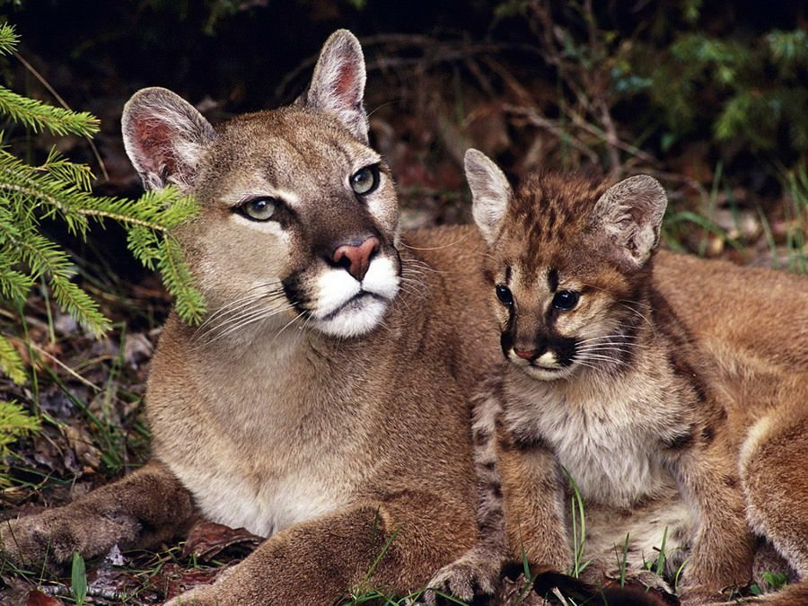 | |
У парку і околицях живуть, за оцінками, 600 ведмедів грізлі, причому близько половини з них в парку. Поголів'я вапіті складає приблизно 30 000. | |
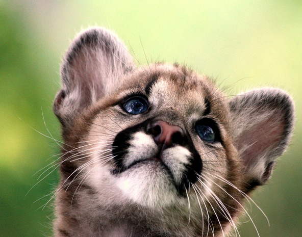 У парку водяться 18 видів риб, у тому числі йєллоустонський лосось, 6 видів рептилій, 4 види амфібій і 311 видів птахів (в тому числі винятково рідкісний американський журавель, а також білоголовий орел, білий пелікан і лебідь-трубач). Майже всі види птахів гніздяться в парку."Для користування і на радість народу на всі часи ..." Це слова з прийнятою 1 березня 1872 року Декларацію з нагоди відкриття національного парку «Йеллоустоун». З тих пір на планеті з'явилося понад 50 тис. Різного роду територій, що охороняються. | |
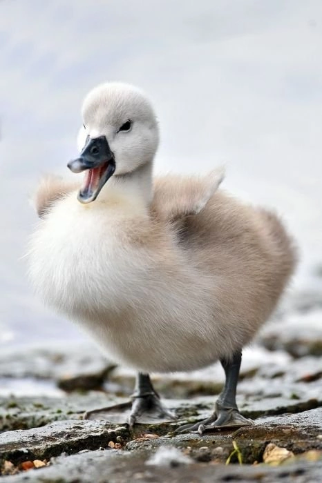 Американці люблять свій парк. З усіх кінців країни, з усіх штатів вони їдуть сюди, щоб відпочити від урбаністичних пейзажів та технократичної цивілізації в цілому, провести кілька днів серед лісів і гір та згадати, що ще двісті років тому вся Америка була таким ось недоторканим «заповідником». | |